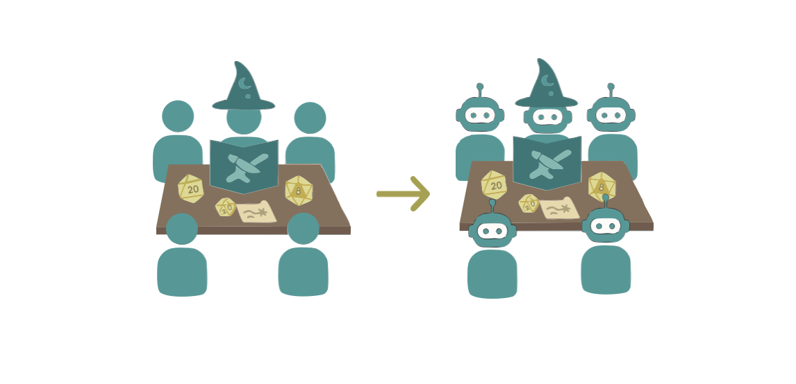

Collective online behavior and AI
Understanding human collective behavior—the large-scale patterns and trends that emerge when many people interact—may be the key to learning why some groups are able to effectively collaborate and coordinate their members while others fail to achieve their goals. Researchers in complexity science have primarily used simplified mechanistic models to explain certain sets of these emergent behaviors. However, humans have complex cognition and path-dependent decision-making processes, so these models are often insufficient for reproducing behavior observed in data. In this project, we plan to use AI to identify patterns in data from online communities and use these observations to build new AI architectures informed by the hypothesized mechanisms driving behavior, providing a new way to understand the collective behaviors found in large groups of natural minds. This proposed work is the subject of a recent grant proposal.